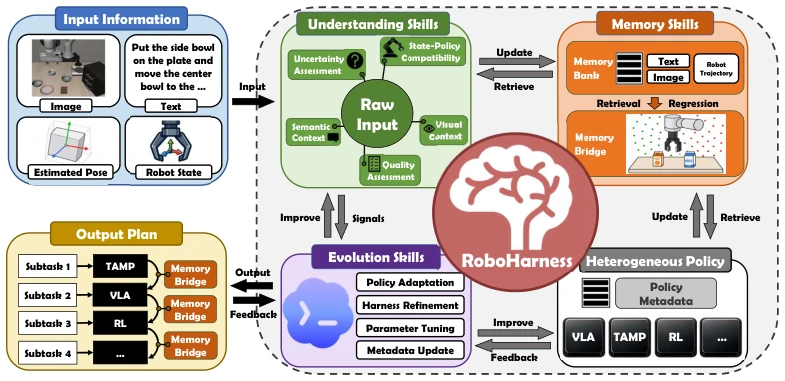
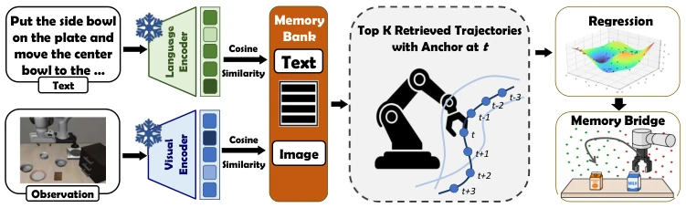
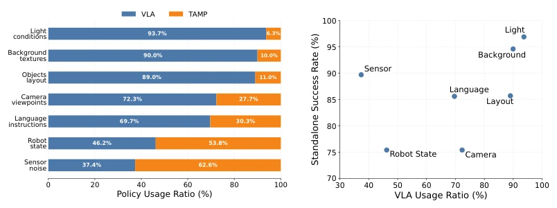
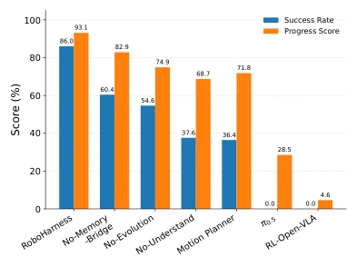
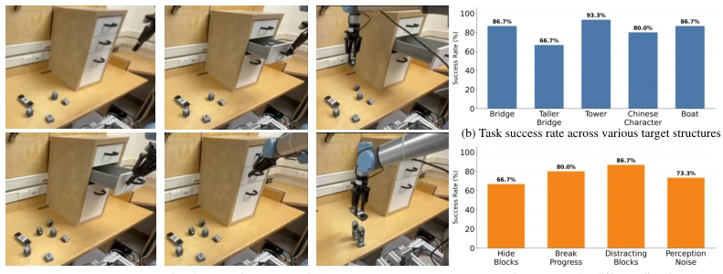
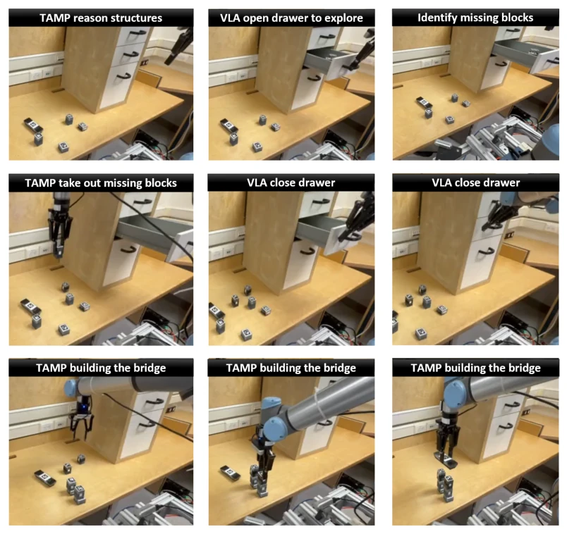

This paper equips robots with a "universal interface", forcibly integrating VLA, RL, TAMP, these distinct powerful models, into the same trench. The core selling point of RoboHarness is memory-driven strategy orchestration, attempting to solve the two major pain points in long-horizon tasks: "insufficient single-agent capability" and "baton handoff failure". To be honest, packaging heterogeneous strategies as reusable skills is quite clever, but whether the "memory bridge" can truly avoid failure in the physical world still depends on luck. The experimental data is indeed impressive, significantly outperforming baselines on LIBERO, but there are also many limitations: the ceiling of relying on existing strategy libraries, and new strategies still need to accumulate experience. Overall, it is a practical engineering framework, but do not expect it to conjure capabilities not in the strategy library out of thin air; it is a typical case of "a clever woman cannot cook without rice".
研究动机Motivation
长程机器人任务需要多种能力，但单一策略（如 VLA 或 RL）总有短板。VLAs 语义好但几何精度差 (Black et al., 2024)，RL 分布外泛化弱 (Zang et al., 2025)，TAMP 泛化受限于预定义抽象 (Silver et al., 2023)。现有规划方法多假设技能同质化且边界固定 (Liang et al., 2024; Han et al., 2024)，忽略了异构策略间能力边界模糊和分布不匹配的问题。当策略 A 的输出不在策略 B 的输入分布内时，直接切换会导致级联失败 (Lee et al., 2021)。因此，如何协调独立训练的策略解决超出单策略能力的任务，且保证交接稳定，是未被充分解决的问题。
Long-horizon robotic tasks require diverse capabilities, but single strategies (such as VLA or RL) always have shortcomings. VLAs have good semantics but poor geometric accuracy (Black et al., 2024), RL has weak out-of-distribution generalization (Zang et al., 2025), TAMP generalization is limited by predefined abstractions (Silver et al., 2023). Existing planning methods mostly assume skill homogeneity and fixed boundaries (Liang et al., 2024; Han et al., 2024), ignoring the issues of blurred capability boundaries and distribution mismatch between heterogeneous strategies. When the output of Strategy A is not within the input distribution of Strategy B, direct switching leads to cascading failure (Lee et al., 2021). Therefore, how to coordinate independently trained strategies to solve tasks exceeding single-strategy capabilities, while ensuring stable handoff, is an insufficiently addressed problem.
方法Method
整体框架由编码代理（Coding Agent）作为高层规划器，调用三类辅助技能：理解、记忆、进化。理解技能评估当前状态与策略能力的匹配度（如不确定性、语义上下文）。记忆技能维护执行轨迹库，支持检索。进化技能根据失败经验调整策略或超参。核心创新是 Memory Bridge：当策略 A 结束时，若状态不在策略 B 的分布内，系统从记忆中检索相关锚点轨迹，训练轻量回归模型评估状态进度，生成桥接轨迹将机器人引导至策略 B 的可行域，无需联合重训。策略被封装为带元数据的技能模块，保留原生接口。进化技能利用在线证据更新策略或超参，如参数微调或元数据修正，形成闭环。
The overall framework uses a Coding Agent as the high-level planner, calling three types of auxiliary skills: understanding, memory, evolution. Understanding skills evaluate the match between current state and strategy capabilities (e.g., uncertainty, semantic context). Memory skills maintain an execution trajectory library, supporting retrieval. Evolution skills adjust strategies or hyperparameters based on failure experience. The core innovation is the Memory Bridge: when Strategy A ends, if the state is not within Strategy B's distribution, the system retrieves relevant anchor trajectories from memory, trains a lightweight regression model to evaluate state progress, generates bridging trajectories to guide the robot to Strategy B's feasible region, without requiring joint retraining. Strategies are encapsulated as skill modules with metadata, retaining native interfaces. Evolution skills utilize online evidence to update strategies or hyperparameters, such as parameter fine-tuning or metadata correction, forming a closed loop.

Figure 1: Overall Framework. RoboHarness integrates heterogeneous robot policies with three auxiliary skill libraries: Understanding Skills, Memory Skills, and Evolution Skills. Understanding Skills transform multimodal observations into rich, task-relevant information for planning and policy selection. Memory Skills manage, retrieve, and update execution histories to support policy coordination and handoffs. Evolution Skills use online execution evidence to update both individual policies and the harness, forming a closed information loop that enables capability-aware planning and stable orchestration of heterogeneous policies.

Figure 2: Memory Bridge. (1) The current observation and task instruction are embedded to retrieve the top-K most relevant in-distribution trajectories from memory. (2) Robot states from the retrieved trajectories are used to estimate a spatial state distribution, which scores how closely a state matches the next policy’s in-distribution region. (3) Candidate states are sampled and ranked by this score to generate a bridge trajectory toward a high-confidence state for the next policy.
Tested on LIBERO, LIBERO-Plus, LIBERO-LoHo, and 500 custom tasks, totaling 135 real robot experiments. Baselines include π0.5, UniVLA, TAMP, etc. RoboHarness achieved a success rate of 98.7% on LIBERO and an average success rate of 95.2% on LoHo, significantly outperforming single-strategy and hierarchical planning baselines. Robustness improved significantly under perturbations (e.g., lighting, layout changes). Ablation studies show that removing the Memory Bridge leads to a significant drop in task completion rate, indicating handoff stability is critical; removing understanding skills leads to decomposition errors. In real experiments, facing hidden objects and structural destruction, the system demonstrated replanning capabilities.

Figure 3: (a) Usage ratios of the underlying policies across LIBERO-Plus perturbation categories. (b) Relationship between the VLA invocation ratio and its standalone performance across perturbation categories.

Figure 4: Success rate and progress score of the ablated systems.

Figure 5: (a) Real robot experiment examples. (b) Overall success Rate of various target structure. (c) Overall success rate under different disturbances
其他图片Other Figures

Figure 6: Full process of the real-robot experiment